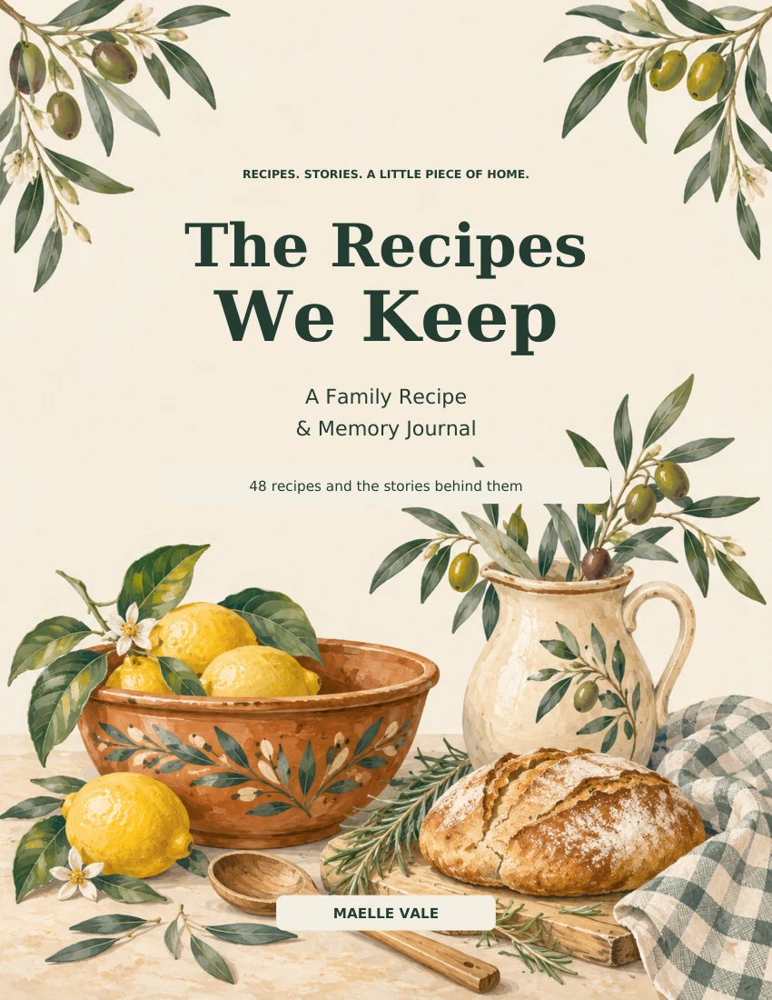

Family Keepsake
The Recipes We Keep
A Family Recipe & Memory Journal
Preserve the recipes, handwritten notes and food memories that make a family story.
View on AmazonAvailability and pricing may vary by marketplace.

A Family Recipe & Memory Journal
Preserve the recipes, handwritten notes and food memories that make a family story.
View on AmazonAvailability and pricing may vary by marketplace.